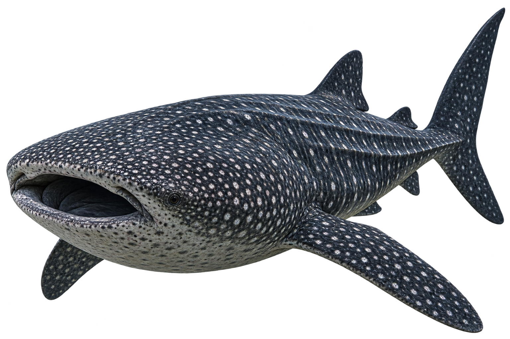
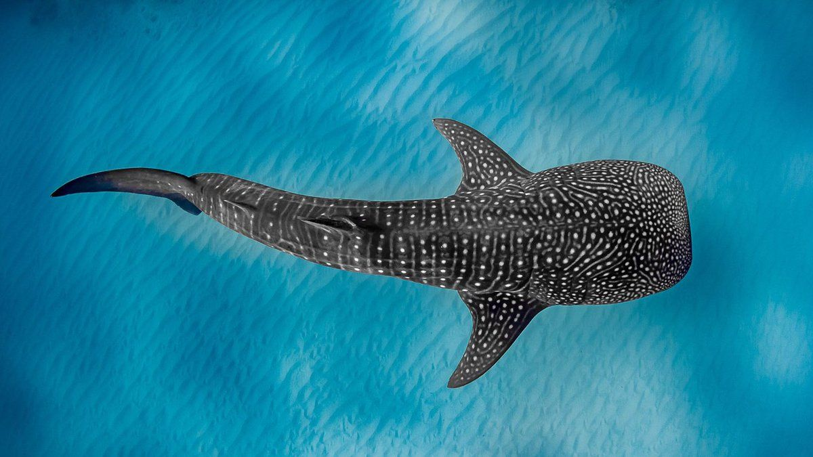
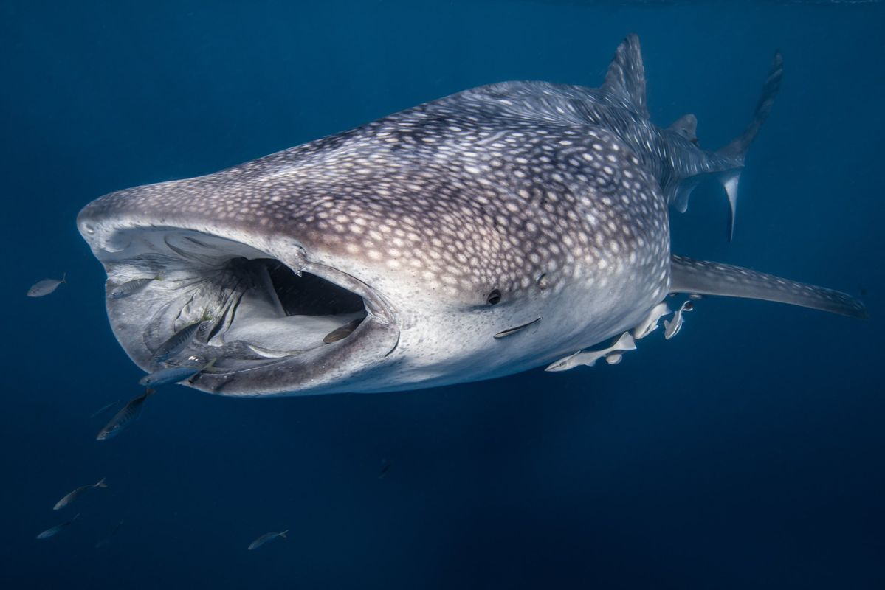
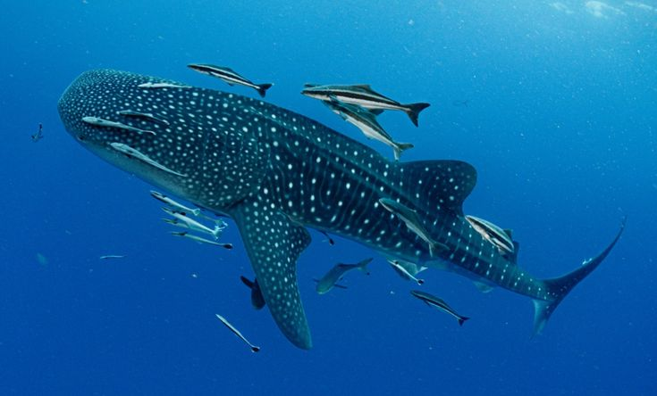

Tubarão-Baleia
Rhincodon typus
O tubarão-baleia é o maior peixe do mundo e, apesar do tamanho impressionante, é um animal dócil que se alimenta principalmente de pequenos organismos.

Curiosidades
Alimentação
Alimenta-se principalmente de plâncton, pequenos peixes, crustáceos e ovos de peixes.
Tempo de vida
Pode viver por várias décadas, com estimativas que chegam a mais de 70 anos.
Tamanho
Pode atingir mais de 12 metros de comprimento, sendo o maior peixe conhecido.
Nascimento
O tubarão-baleia é ovovivíparo: os filhotes se desenvolvem dentro da mãe e nascem já formados.
Importantes para o ecossistema
Participa do equilíbrio dos oceanos ao se alimentar de grandes quantidades de plâncton e outros pequenos organismos.
Habitat
Vive principalmente em águas tropicais e temperadas, podendo realizar longas migrações pelo oceano.


Você Sabia?
Cada tubarão-baleia possui um padrão de manchas único, que pode ser usado para identificá-lo.
